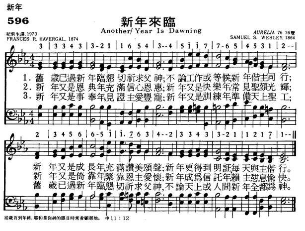
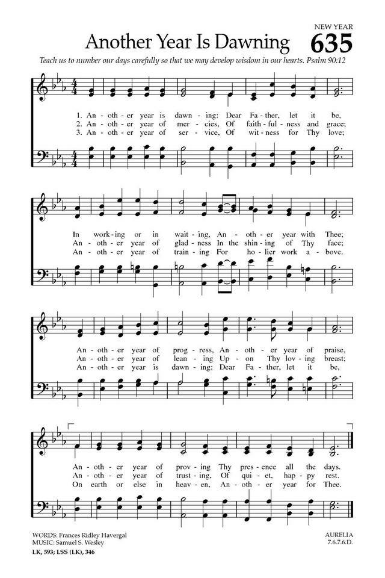

|
|
|
|
1 Another year is dawning! 2 Another year of mercies, 3 Another year of service, |
歌词：
|
|
https://www.mred365.cn/szxg/7599.html

 |
|
|
|
|

https://www.youtube.com/watch?v=5vAfUukVvdM -
https://www.youtube.com/watch?v=hCYMewQa0gQ
| Text: | Another Year Is Dawning |
| Author: | Frances Ridley Havergal |
| Tune: | AURELIA |
| Composer: | Samuel S. Wesley |
Notes
Another year is dawning. Frances B. Havergal. [New Year.] Written in 1874 for the ornamental leaflets and cards published by Caswell, 1875. It was subsequently included in her work, Under the Surface, 1874, and Life Chords, 1880. It is in 6 stanzas of 4 lines. [HAV. MSS.]
-- John Julian, Dictionary of Hymnology (1907)
Tune Information
| Title: | AURELIA |
| Composer: | Samuel Sebastian Wesley (1864) |
| Meter: | 7.6.7.6 D |
| Incipit: | 33343 32116 54345 |
| Key: | C Major |
| Source: | Jerusalem the Golden, 1864 |
| Copyright: | Public Domain |
| Short Name: | Samuel Sebastian Wesley |
| Full Name: | Wesley, Samuel Sebastian, 1810-1876 |
| Birth Year: | 1810 |
| Death Year: | 1876 |
Samuel Sebastian Wesley (b. London, England, 1810; d. Gloucester, England, 1876)

was an English organist and composer. The grandson of Charles Wesley, he was born in London, and sang in the choir of the Chapel Royal as a boy. He learned composition and organ from his father, Samuel, completed a doctorate in music at Oxford, and composed for piano, organ, and choir. He was organist at Hereford Cathedral (1832-1835), Exeter Cathedral (1835-1842), Leeds Parish Church (1842-1849), Winchester Cathedral (1849-1865), and Gloucester Cathedral (1865-1876). Wesley strove to improve the standards of church music and the status of church musicians; his observations and plans for reform were published as A Few Words on Cathedral Music and the Music System of the Church (1849). He was the musical editor of Charles Kemble's A Selection of Psalms and Hymns (1864) and of the Wellburn Appendix of Original Hymns and Tunes (1875) but is best known as the compiler of The European Psalmist (1872), in which some 130 of the 733 hymn tunes were written by him.
Bert Polman
Notes
Composed by Samuel S. Wesley (PHH 206), AURELIA (meaning "golden") was published as a setting for “Jerusalem the Golden” in Selection of Psalms and Hymns, which was compiled by Charles Kemble and Wesley in 1864. Though opinions vary concerning the tune's merits (Henry J. Gauntlett once condemned it as "secular twaddle"), it has been firmly associated with Stone's text since tune and text first appeared together in the 1868 edition of Hymns Ancient and Modern. However, Erik Routley (PHH 31) suggests rejuvenating this text by singing it to ST. THEODULPH (375/376).
Sing stanzas 1-3 in parts and stanza 4 in unison. Support with crisp organ articulation on the repeated soprano tones.
--Psalter Hymnal Handbook
新年來臨 Another Year Is Dawning
舊歲已過新年臨，懇切祈求父神；不論工作或等候，新年偕主同行；
新年又是成長年，充滿讚美頌聲；新年更得到明證，每天與主偕行。
新年又是恩典年，充滿信心恩惠；新年又是快樂年，常見聖顏光輝；
新年又是倚靠年，緊靠恩主懷中，新年成為信託年，賴主憩息愉快。
新年又是事奉年，見證主愛豐盈；新年又是訓練年，準備天上聖工；
舊歲已過新年臨，懇切祈求父神，不論天上或人間，新年全都為神。
在這新年的開始，我們都不能預知未來的境遇，但神告訴我們「耶和華你神..眷顧…從歲首到年終，耶和華你神的眼目時常看顧那地。」祇要我們信靠仰賴神，這將是快樂蒙福的新年。
「新年來臨」是作者海雯格在1874年初寫給她親友的賀年卡上的賀詞及禱文。本詩歌由撒母耳衛斯理（Samuel
Wesley, 1810-1876）譜曲。 他是衛斯理兄弟中最有音樂天份的一位。
第一節：懇求每日與主偕行，生活中充滿讚美之聲。
第二節：深願新的一年，在信靠、恩惠、歡樂中安渡。
第三節：切願在新年的歲月，殷勤事奉，見證主愛，榮神益人。
海雯格（Frances Ridley Havergal, 1836-1879）的父親是英國聖公會的牧師，也是作曲家及詩人。
海雯格是家中最小的孩子，體弱多病，倍受父母寵愛。
她十一歲喪母，由父親撫育長大。 她自幼聰慧過人，四歲就能讀聖經，七歲作詩，諳英、法、德等六國語文。 音樂上受父親薰陶，她有甜美的歌喉，且能演奏名曲。 十四歲時獻身於主，她終生保持一顆童心，專心仰望神。
她寫了許多都是內心省察沉思的詩和散文。 她說：「寫作對我是禱告，我從不自己作一節詩，不論是構思或靈感，我求神給我每一句、每一字。
當主向我低語時，我就存喜樂感謝的心記下。 我所有的詩，都是這樣寫成的。」
海雯格對貧窮人特別關心，時常去貧民區傳福音、作見証。 她常對詩班成員說：「我勸你們徹底熟練一首詩，使它成為你自己的一部份，然後求神使它成為信息。」
她清楚地認定，應當謹慎地使每一分鐘，都用在神要我們作的事工上。 她依靠神的話和禱告而生活，臨終時要求將約翰一書1:7「祂兒子耶穌的血也洗淨我們一切的罪。」鐫刻在她的墓碑上。
她自己最喜愛的作品是「獻己於主」（Take My Life and Let It Be）、「我主耶穌，我依靠祢」（I Am Trusting Thee,
Lord Jesus）讓我們同誦這詩歌作為歲首的心聲：
我主耶穌，我依靠祢
I Am Trusting Thee, Lord Jesus
我主耶穌，我依靠祢 – 惟獨依靠祢；
靠祢寶血將罪塗抹，全塗抹。
倚靠救主親手領我 – 惟獨跟從主；
時時刻刻主必賜我所需用。
倚靠救主賜我力量 – 主能力無窮；
主所賜我恩惠應許不落空。
我主耶穌，我今靠祢 – 惟獨倚靠祢；
倚靠救主直到永遠，到永遠。阿門！
 (請點耳機收聽)
(請點耳機收聽)
中英文聖詩集參考
英文歌名 Another
Year Is Drawing
頌主新歌 596
頌主新歌(中英文雙語本) 603
生命聖詩 504
歡欣讚美 811
聖徒詩集 712
恩頌聖歌 406
英文歌名 I
Am Trusting Thee, Lord Jesus
教會聖詩 51
註：「歡欣讚美」詩集為英文版，原名是
Celebration Hymnal．
http://www.hymncompanions.org/Jan/01/stream.php